Same people, same KFUPM colours and fonts, one shared stylesheet. Only the layout changes. Open each option, make the window narrow to see the phone layout, then pick a direction. Mixing is fine, for example the banner from option 4 with the cards from option 2.
-
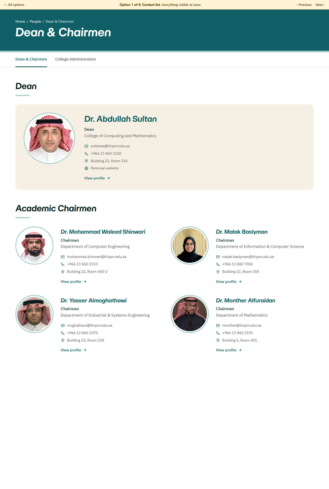
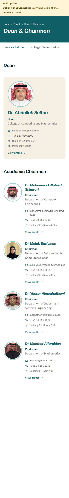
Option 1
Contact list
Everything is visible at once: photo, title, email, phone and office. The Dean gets a highlighted panel.
- Good for
- Visitors who just want an email or phone number. No clicks needed.
- Watch out
- Busy. Gets very long when there are many people.
-
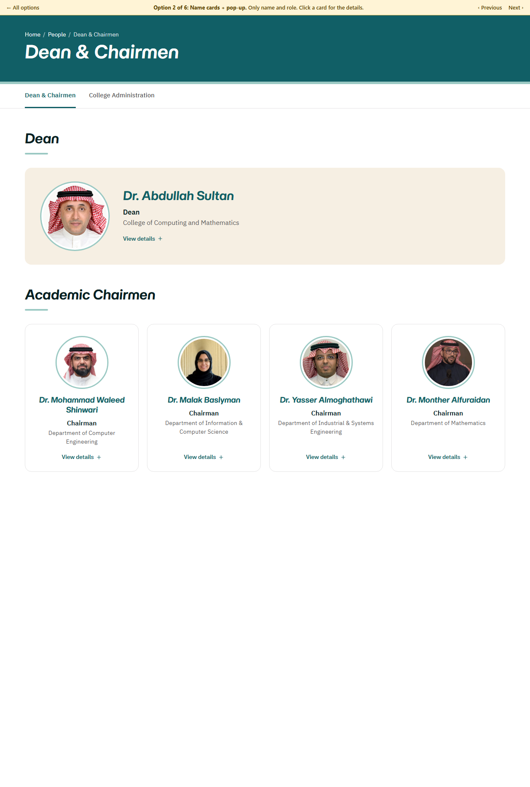
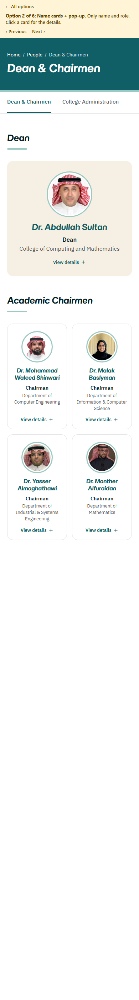
Option 2
Name cards + pop-up
A calm grid with only photo, name and role. Click a card to open a pop-up with the full contact details.
- Good for
- A clean, modern look. Works the same for 5 people or 50.
- Watch out
- Contact details are one click away. The pop-up must be tested in Sitefinity (it may need the Embed code widget).
-
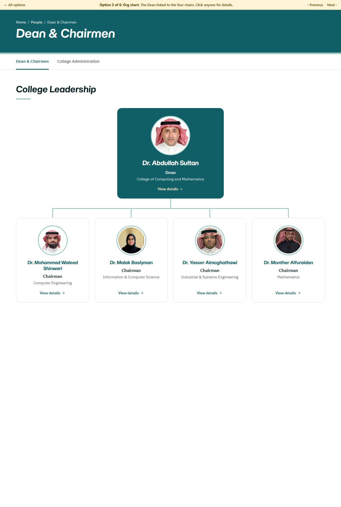
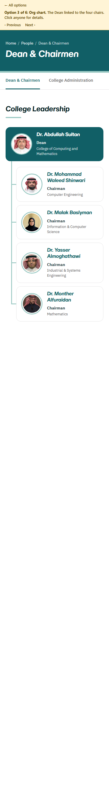
Option 3
Org chart
Shows the structure: the Dean at the top, linked to the four department chairs. Click anyone to see their details.
- Good for
- Explaining how the college is organised, at a glance.
- Watch out
- Only fits small groups with two levels. Same pop-up test as option 2.
-
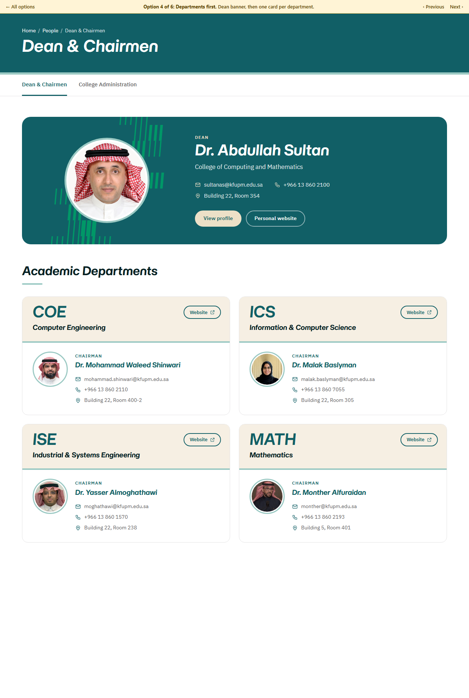
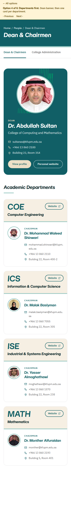
Option 4
Departments first
The Dean in a turquoise banner with the KFUPM FAST Matrix pattern, then one card per department with its chair and a link to that department's website.
- Good for
- Visitors looking for a department. Links the five websites together.
- Watch out
- The strongest use of brand colour. The banner shows the photo large, so it needs a sharper photo.
-
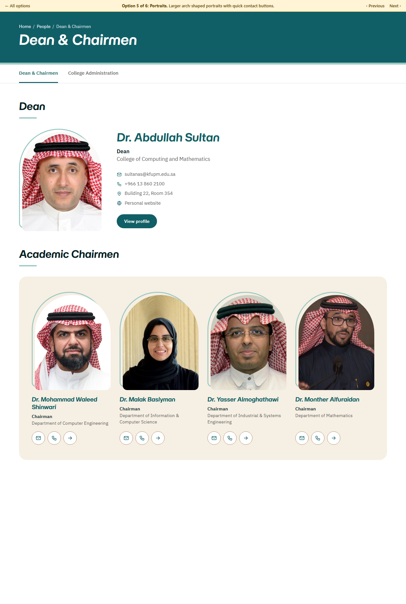
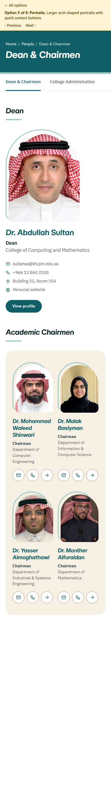
Option 5
Portraits
Larger arch-shaped portraits on a beige band, with quick email, phone and profile buttons.
- Good for
- A warmer, more human feel.
- Watch out
- Needs new, consistent, higher-resolution photos. The current ones are only 230 to 500 px wide.
-
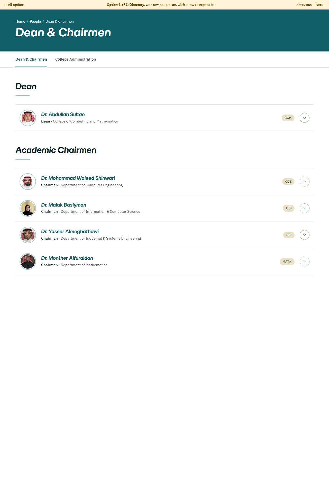
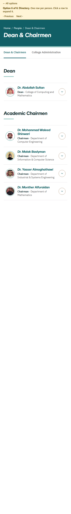
Option 6
Directory
A compact list with one row per person. Click a row to open the contact details under it.
- Good for
- Long lists such as faculty and staff, so it can be reused on the department sites.
- Watch out
- Less visual: the photos are small.
Things to know
- Photos are small. The Dean's photo is 300 × 300 px and Dr. Malak's web copy is 280 × 230 px. Options 4 and 5 show photos larger, so they need new, sharper photos.
- Two profile links use old addresses. Dr. Malak's and Dr. Yasser's profiles open correctly, but their web addresses still say
dr.-motaz-alfarrajanddr.-anas-alghazi. Fix them in Content → People → URL. - Clicks without JavaScript. The pop-ups (options 2 and 3) and the expanding rows (option 6) use built-in browser features. Sitefinity's Content block editor might remove the attributes they need. If so, use the Embed code widget instead.
- Wording. The live site says "Chairman" for all four chairs, including Dr. Malak. You may prefer "Chair".
- College colour. The rings and lines use the CCM college colour, which still needs confirming with the KFUPM branding team.